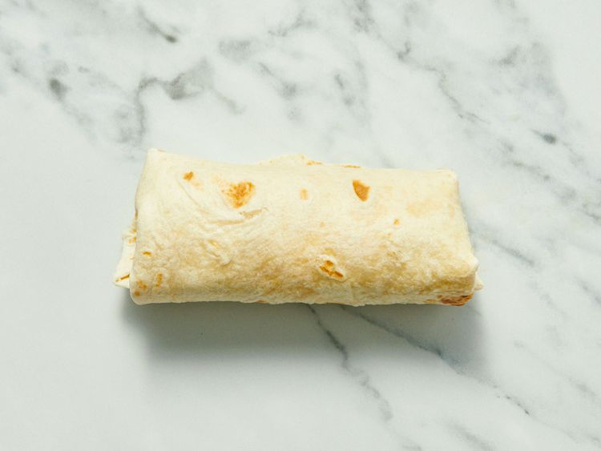

Minute Breakfast Burrito

Description
A fast DIY breakfast for the road that's made in minutes with scrambled egg, salsa, and cheese wrapped up in a
tortilla.
Ingredients
-
2 large eggs
-
2 tablespoons salsa
-
1 slice reduced-fat American cheese
-
1 tortilla
Step By Step Process
- Gather all ingredients.
- Spray a cereal bowl with nonstick cooking spray. Crack the eggs into the bowl, add the salsa, and stir.
- Microwave on high for 1 minute, stir, and cook for another minute or until the mixture firms up.
- Place cheese in center of tortilla and top with egg mixture.
- Wrap it all up like a burrito and head for the car!